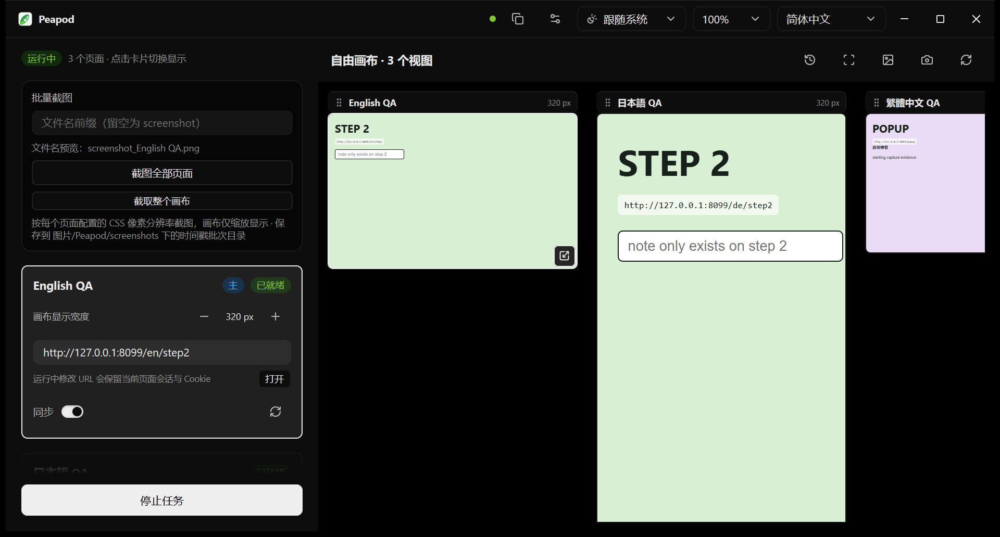

FORM.Shop Journal
EVERYDAY COLLECTIONMade for
Made for
the everyday.
Simple things,
thoughtfully made.
你
在同一个窗口里，让多个语言、环境或设备版本的网站一起完成同一个流程。少一点重复验证，多一点确定性。
Simple things,
thoughtfully made.
响应式预览器只改变尺寸。Peapod 让不同语言、域名和环境真正走完同一个用户旅程，并保存每一步的证据。

在主页面点击、输入、滚动或提交，其他页面按顺序实时重放。任何一步失败都会暂停并明确报错。
跳转和重定向会映射到每个页面自己的域名、路径和查询参数，始终停留在对应版本。
按配置分辨率批量截图，保留操作时间线和可重放脚本，一键导出为可附到 PR 的 HTML 报告。
自由画布独立缩放每个视图，200–3840px 自定义分辨率、常用 User-Agent 预设，以及独立或共享的临时会话。
内置本地 MCP 服务，支持启动、导航、操作、回放、截图和诊断。
密码永不录制，任务结束即清除会话。截图与记录只保存在你的电脑上。
从上线前的最后一遍检查，到持续迭代中的回归验证，让每个版本保持同步。
用同一套结账流程检查英语、中文、日语和韩语，快速定位只在某个语言出现的问题。
把 dev、staging 和 prod 并排放在一起，确认一次发布在每个环境中的行为一致。
每个页面使用独立会话，分别登录管理员、编辑和访客，验证不同权限下的体验。
粘贴 URL 列表或使用变量模板，一次配置最多 10 个语言、环境或设备页面。
设置桌面、移动或自由画布，调整分辨率、User-Agent 和会话隔离方式，按需开启录制。
只在主页面完成流程，其他页面实时同步。任何异常都会立即显示。
从时间线回顾每一步，按配置分辨率截图或导出 HTML 报告，把证据带进评审。
预编译包已发布到 GitHub Releases，也可以从源码构建，无需安装额外浏览器。源码构建需要 Go 1.27.4 或更新版本，以及系统 WebView。
# Clone the repository
$ git clone https://github.com/jichao99/peapod.git
$ cd peapod
# Build the app
$ go build .关于 Peapod 的工作方式和边界。
响应式预览器通常只展示同一个 URL 的多种尺寸。Peapod 面向多个版本的完整流程，支持不同语言、域名和环境，并同步导航、记录每一步。
不会。Peapod 没有遥测，也不会主动发起网络请求。页面只访问你打开的网站，截图和录制文件只保存在本地。
User-Agent 预设只改变 UA 字符串，页面仍使用当前系统的 WebView 渲染。因此无法用它复现依赖 Safari 引擎本身的问题。
支持 Windows、macOS 和 Linux，分别使用 WebView2、WKWebView 和 WebKitGTK。Windows 是目前测试最充分的平台。